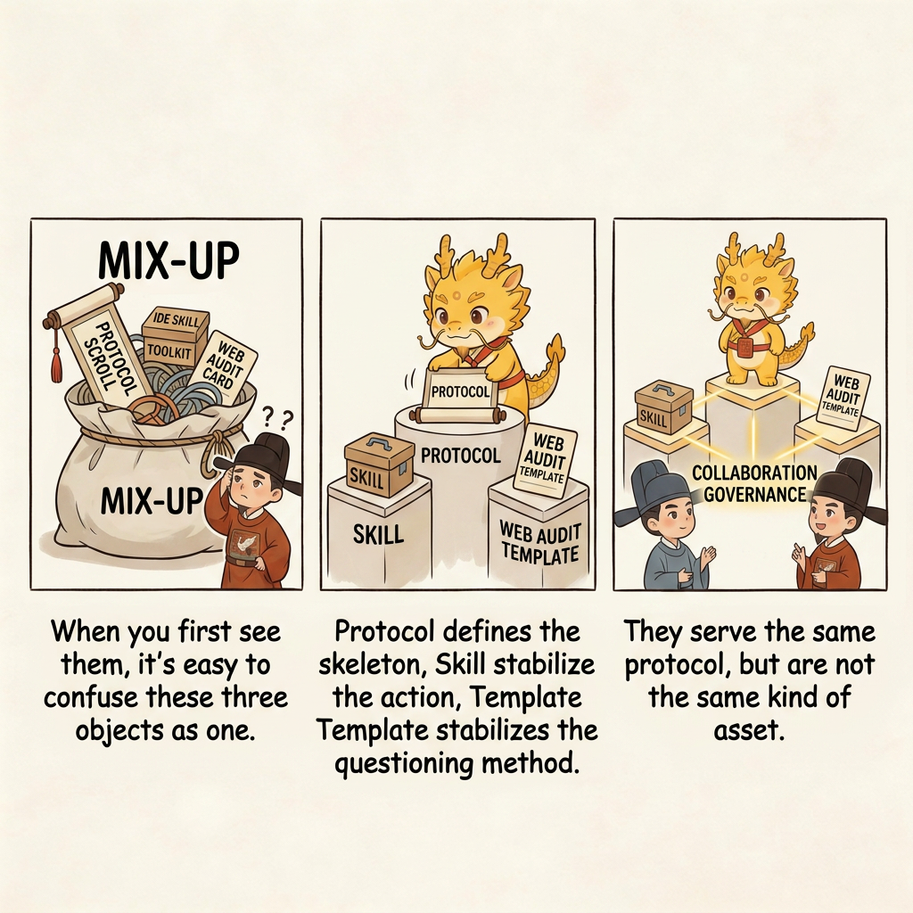
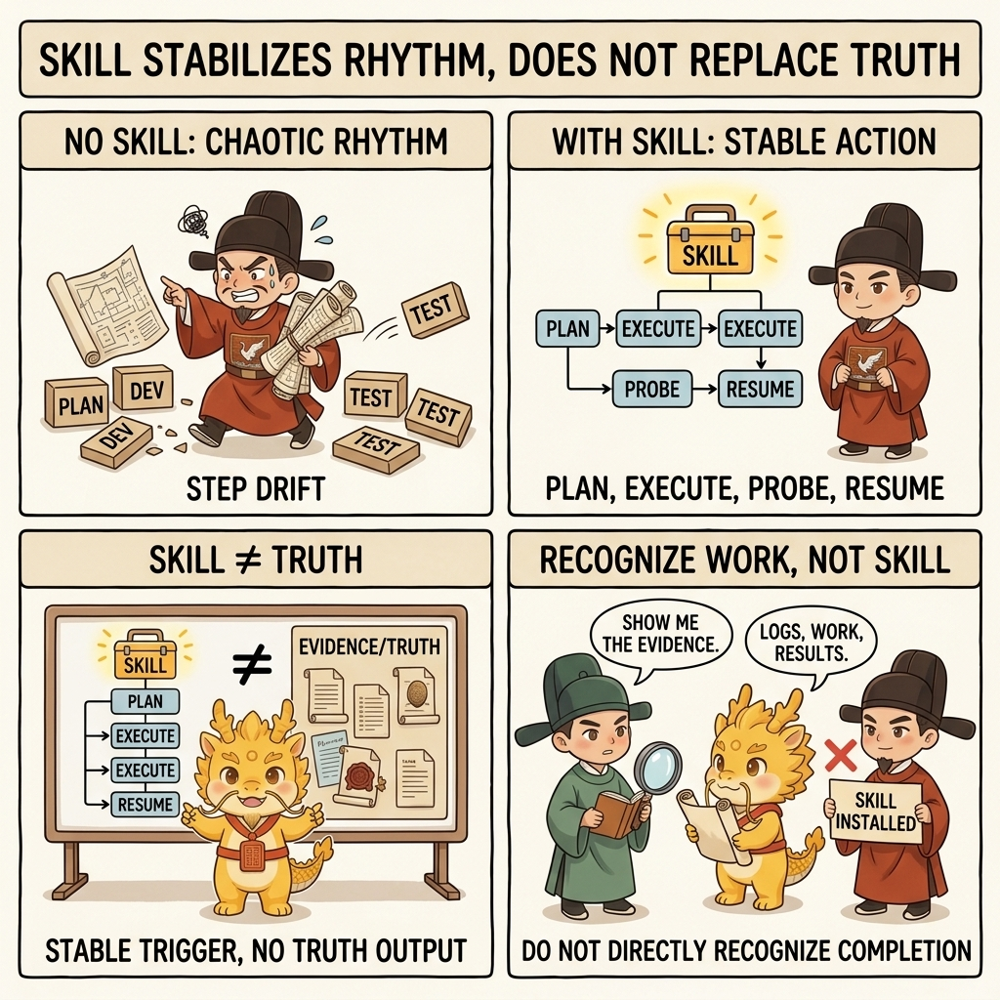
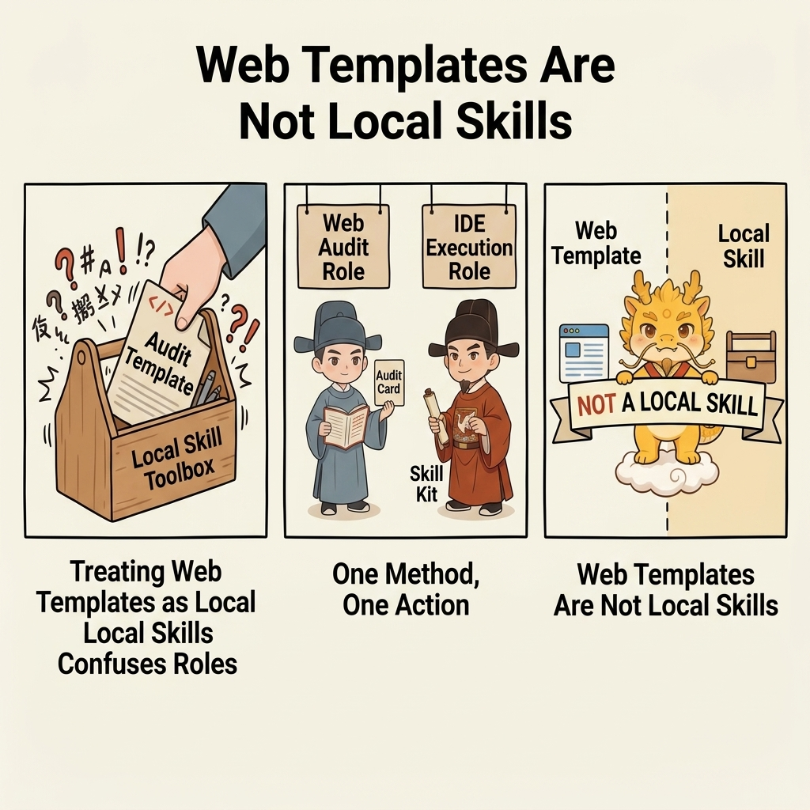

Entry
Protocol, Skill, and Web Audit Templates

Protocol, Skill, and Web Audit Templates: The Three Things
Table of Contents
- What This Page Solves
- Shortest Definition First
- Asset Overview
- Part 1: What Is the Protocol
- Part 2: What Is Skill
- Part 3: What Are Web Audit Templates
- Why Web Audit Templates Must Stay Separate from Skill
- Three Common Misreadings
- Recommended Next Steps
What This Page Solves
This page belongs to Layer 3: Relation and Adoption.
It does not answer "how do I run the loop right now?" It answers a different question that often gets mixed up before any comparison can even begin:
- what this repo actually ships
- what
Protocol / Skill / Web audit assetseach are - which of these are methodologies, and which are only carriers or stabilizers when you compare them with mainstream approaches
When many people first see this project, they collapse three different things into one:
- They treat the protocol as a package of installable prompts
- They treat Skill as the protocol itself
- They treat Web audit templates as local capabilities that also need installation
All three misunderstandings send the entry logic in the wrong direction.
Shortest Definition First
Cyber-Ming-Protocol is a protocol-first project.
- Protocol defines the governance skeleton
- Skill stabilizes high-frequency actions on the IDE side
- Web audit templates stabilize audit questions on the Web side
All three serve the same protocol, but they are not the same kind of thing.
The safest public description is: Protocol / Skill / Docs are the project's three main delivery forms, while web-audit-templates/ is a separate collaboration asset for the Web side.
This page focuses on protocol, Skill, and templates because many comparisons start by comparing the wrong layer: they mix delivery forms with methodologies, and everything after that becomes muddy.
Asset Overview
| Object | What It Is | Where It Lives | Main Function | Required | Often Mistaken For |
|---|---|---|---|---|---|
| Protocol | A set of human-AI governance rules | README.md, wiki/ | Defines what must happen first, what counts as completion, and who is responsible for what | Yes, you must understand it | A prompt pack or a stylistic narrative |
| Skill | A stable trigger skeleton on the IDE side | skill/ | Helps you trigger planning, execution, probing, and renewal more reliably | No, you can install it later | The protocol itself or an automatic judge |
| Docs / Teaching | The explanatory and teaching layer of the project | README.md, wiki/ | Helps you understand the protocol, cases, boundaries, and how to get started | Yes, you need enough of it to understand the system | Disposable supporting pages |
| Web Audit Templates | Audit collaboration templates for the Web side | web-audit-templates/ | Helps you do plan audit, completion audit, and renewal judgment more reliably | No, optional | A local Skill or an automatic executor |
Part 1: What Is the Protocol
The protocol is the truly irreplaceable part of this project.
It defines a governance structure such as:
- Review first, then execute
- Submit the Atomic Execution Contract first, then allow work to begin
- The executor does not self-certify completion
- Completion must be established by logs, artifacts, run results, and commits as evidence
- When a window decays, you use renewal instead of dragging the old context forward
All of that still holds even if you never install Skill.
Part 2: What Is Skill
Skill does not invent the protocol for you. Its role is to help you hold the protocol more reliably on the IDE side.

For example, the skills in this repo solidify several high-frequency actions:
approval-first-planner: Produce the Atomic Execution Contract and boundaries for approval firstapproved-checklist-executor: Execute, verify, and archive strictly by approved slicesprobe-first-scout: Do not pretend to understand the whole system; run the smallest probe firstlegacy-project-handover: Provide a read-only snapshot for takeover or renewalauditor-succession-prompt: Package a clean renewal packet for a fresh Web auditor seatfree-development-mode: Continue long-running development under explicit red-line control after the user deliberately activates it
But they do not change one thing:
Skill cannot define truth for you.
But it can now do one more important thing:
it can bootstrap and maintain the place where current truth should live.
When serious work begins, the corresponding skill layer can bootstrap dev_repo/ so that state.json, journal.jsonl, evidence_index.json, and tree.md hold current runtime truth in repository artifacts rather than only inside chat residue.
That does not make Skill the judge of truth. It means Skill can create and maintain the runtime container where auditable truth is recorded.
Part 3: What Are Web Audit Templates
Web audit templates are not local Skill, and they are not IDE-side triggers.
They simply help you play the auditor role more reliably on the Web side:
- Audit whether the plan is atomic enough
- Audit whether completion is real
- Audit whether the current window has decayed and needs renewal
They provide the scaffold for how to ask, how to inspect, and how to judge, not for how to execute.
Why Web Audit Templates Must Stay Separate from Skill
Because the two sides hold different roles:

- IDE-side Skill maps to execution, planning, probing, and takeover
- Web-side templates map to plan audit, completion audit, and renewal judgment
If you put everything into skill/, readers will easily misunderstand three things:
- That Web audit is also a local installable
- That executor and auditor are just the same kind of tool with different prompts
- That audit can be completed conveniently inside the same window
That would weaken the most important layer of the protocol: role separation and sovereignty in human hands.
Three Common Misreadings
Misreading 1: Installing Skill Makes the Protocol Work Automatically
Wrong. Installing Skill only makes the right actions easier to trigger. It does not mean you already satisfy the protocol's evidence standard.
Misreading 2: Without Skill, You Cannot Use Cyber-Ming
Wrong. This protocol is first of all a governance method that can be executed by hand. You can absolutely run the loop manually first and decide about Skill later.
Misreading 3: Web Audit Templates Are Also Skills You Install Locally
Wrong. Web templates help the auditor question, verify, and judge. They are not IDE-side local skills.
Recommended Next Steps
- If you want to stay inside Layer 3, continue with Comparison and map this against mainstream approaches
- If you have not yet completed Layer 1, go back to Minimal Loop Guide
- If you have already completed Layer 1 and now want Layer 2, go back to Minimal Stable Loop Guide